Getting Started With SEraster
Source:vignettes/getting-started-with-SEraster.Rmd
getting-started-with-SEraster.RmdGetting Started with SEraster
This tutorial walks you through the basic functionalities of
SEraster and two examples of downstream analysis that can
be performed with the rasterized spatial omics data.
In the examples below, we assume the input data is provided as a
SpatialExperiment Bioconductor object. Please refer to the
following documentations to see how you would format your data into a
SpatialExperiment object:
- SpatialExperiment package
- Formatting a SpatialExperiment Object for SEraster
merfish_mousePOAdataset
For downstream analyses, we will be using nnSVG
for spatially variable gene (SVG) analysis and CooccurrenceAffinity
for cell-type co-enrichment analysis.
References for nnSVG and CooccurrenceAffinity can be found below:
- Weber, L. et al. (2023), “nnSVG for the scalable identification of spatially variable genes using nearest-neighbor Gaussian processes”, Nature Communications
- Mainali, K. et al. (2021), “A better index for analysis of co-occurrence and similarity”, Science Advances
- Mainali,K. et al. (2022), “CooccurrenceAffinity: An R package for computing a novel metric of affinity in co-occurrence data that corrects for pervasive errors in traditional indices”, bioRxiv
Load libraries
library(SEraster)
library(SpatialExperiment)
#> Loading required package: SingleCellExperiment
#> Loading required package: SummarizedExperiment
#> Loading required package: MatrixGenerics
#> Loading required package: matrixStats
#>
#> Attaching package: 'MatrixGenerics'
#> The following objects are masked from 'package:matrixStats':
#>
#> colAlls, colAnyNAs, colAnys, colAvgsPerRowSet, colCollapse,
#> colCounts, colCummaxs, colCummins, colCumprods, colCumsums,
#> colDiffs, colIQRDiffs, colIQRs, colLogSumExps, colMadDiffs,
#> colMads, colMaxs, colMeans2, colMedians, colMins, colOrderStats,
#> colProds, colQuantiles, colRanges, colRanks, colSdDiffs, colSds,
#> colSums2, colTabulates, colVarDiffs, colVars, colWeightedMads,
#> colWeightedMeans, colWeightedMedians, colWeightedSds,
#> colWeightedVars, rowAlls, rowAnyNAs, rowAnys, rowAvgsPerColSet,
#> rowCollapse, rowCounts, rowCummaxs, rowCummins, rowCumprods,
#> rowCumsums, rowDiffs, rowIQRDiffs, rowIQRs, rowLogSumExps,
#> rowMadDiffs, rowMads, rowMaxs, rowMeans2, rowMedians, rowMins,
#> rowOrderStats, rowProds, rowQuantiles, rowRanges, rowRanks,
#> rowSdDiffs, rowSds, rowSums2, rowTabulates, rowVarDiffs, rowVars,
#> rowWeightedMads, rowWeightedMeans, rowWeightedMedians,
#> rowWeightedSds, rowWeightedVars
#> Loading required package: GenomicRanges
#> Loading required package: stats4
#> Loading required package: BiocGenerics
#>
#> Attaching package: 'BiocGenerics'
#> The following objects are masked from 'package:stats':
#>
#> IQR, mad, sd, var, xtabs
#> The following objects are masked from 'package:base':
#>
#> anyDuplicated, aperm, append, as.data.frame, basename, cbind,
#> colnames, dirname, do.call, duplicated, eval, evalq, Filter, Find,
#> get, grep, grepl, intersect, is.unsorted, lapply, Map, mapply,
#> match, mget, order, paste, pmax, pmax.int, pmin, pmin.int,
#> Position, rank, rbind, Reduce, rownames, sapply, setdiff, table,
#> tapply, union, unique, unsplit, which.max, which.min
#> Loading required package: S4Vectors
#>
#> Attaching package: 'S4Vectors'
#> The following object is masked from 'package:utils':
#>
#> findMatches
#> The following objects are masked from 'package:base':
#>
#> expand.grid, I, unname
#> Loading required package: IRanges
#> Loading required package: GenomeInfoDb
#> Loading required package: Biobase
#> Welcome to Bioconductor
#>
#> Vignettes contain introductory material; view with
#> 'browseVignettes()'. To cite Bioconductor, see
#> 'citation("Biobase")', and for packages 'citation("pkgname")'.
#>
#> Attaching package: 'Biobase'
#> The following object is masked from 'package:MatrixGenerics':
#>
#> rowMedians
#> The following objects are masked from 'package:matrixStats':
#>
#> anyMissing, rowMedians
library(nnSVG)
library(CooccurrenceAffinity)
#> Loading required package: BiasedUrn
library(ggplot2)Load example dataset
data("merfish_mousePOA")
# check the dimension of the genes-by-cells matrix at single-cell resolution
dim(merfish_mousePOA)
#> [1] 155 6509
# check the number of cell-types
length(unique(colData(merfish_mousePOA)$celltype))
#> [1] 16This MERFISH mouse preoptic area (POA) dataset contains 6,509 cells and 16 cell-types.
# plot at single-cell resolution
df <- data.frame(spatialCoords(merfish_mousePOA), celltype = colData(merfish_mousePOA)$celltype)
ggplot(df, aes(x = x, y = y, col = celltype)) +
coord_fixed() +
geom_point(size = 1.5, stroke = 0) +
guides(col = guide_legend(override.aes = list(size = 3))) +
labs(x = "x (μm)",
y = "y (μm)",
col = "Cell-types") +
theme_bw() +
theme(panel.grid = element_blank())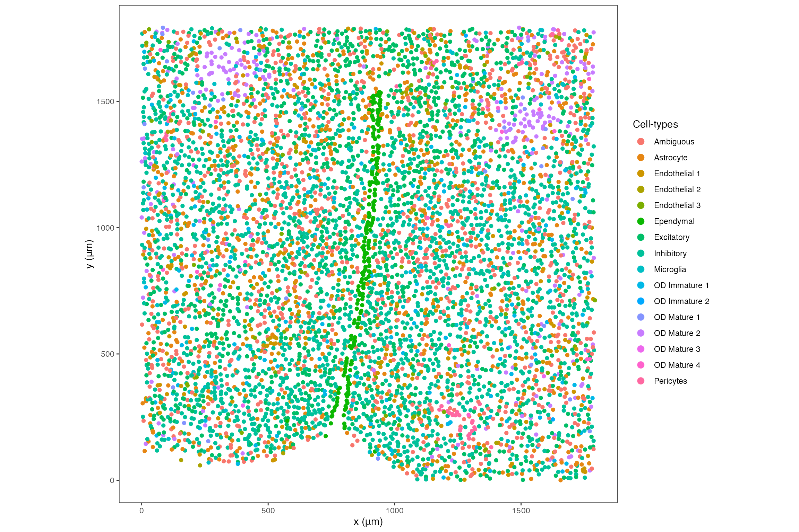
SEraster basic functionalities
SEraster reduces the number of spatial points in spatial
omics datasets for downstream analysis through a process of
rasterization where single cells’ gene expression or cell-type labels
are aggregated into equally sized square or hexagonal pixels (can be
changed using the square argument) based on a user-defined
resolution.
Here, we demonstrate the basic functionalities of
SEraster.
Rasterize gene expression
For continuous variables such as gene expression or other molecular
information (e.g. protein expression if you are using spatial proteomics
datasets), SEraster aggregates the observed raw counts or
normalized expression values for each molecule within each pixel using
means by default (can be changed using the fun
argument).
Let’s try rasterizing the gene expression of the MERFISH mouse POA dataset we loaded.
rastGexp <- SEraster::rasterizeGeneExpression(merfish_mousePOA, assay_name="volnorm", resolution = 50)
# check the dimension of the genes-by-cells matrix after rasterizing gene expression
dim(rastGexp)
#> [1] 155 1301As you can see, SEraster aggregated 6,509 single cells
into 1,301 pixels.
# plot total rasterized gene expression
SEraster::plotRaster(rastGexp, name = "Total rasterized gene expression")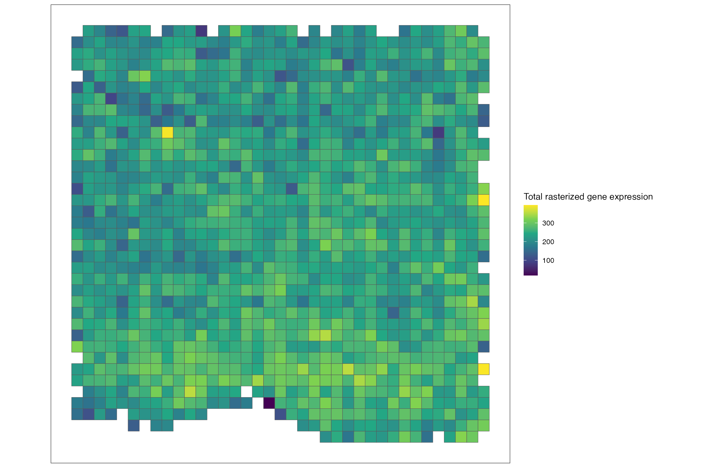
# plot a specific gene
SEraster::plotRaster(rastGexp, feature_name = "Esr1", name = "Esr1")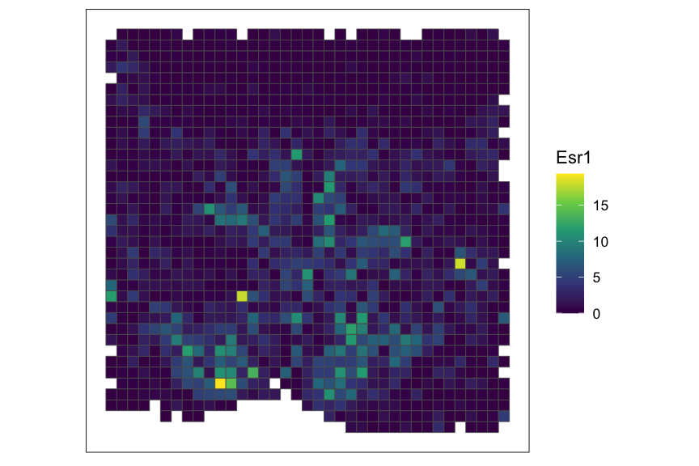
Rasterize gene expression within cell-type
Such rasterization can also be performed in a cell-type-specific
manner by restricting to cells of a particular cell-type prior to
rasterization. Here, we subset the dataset to Inhibitory cell-type and
run SEraster on the subsetted dataset.
## rasterize cell-type specific gene expression by subsetting to cell-type of interest
ct_interest <- "Inhibitory"
spe_subset <- merfish_mousePOA[,merfish_mousePOA$celltype == ct_interest]
## rasterize gene expression
rastGexpSubset <- SEraster::rasterizeGeneExpression(spe_subset, assay_name="volnorm", resolution = 50)
## plot
SEraster::plotRaster(rastGexpSubset, name = paste0("Total rast gexp in ", ct_interest))
SEraster::plotRaster(rastGexpSubset, feature_name = "Esr1", name = paste0("Esr1 in ", ct_interest))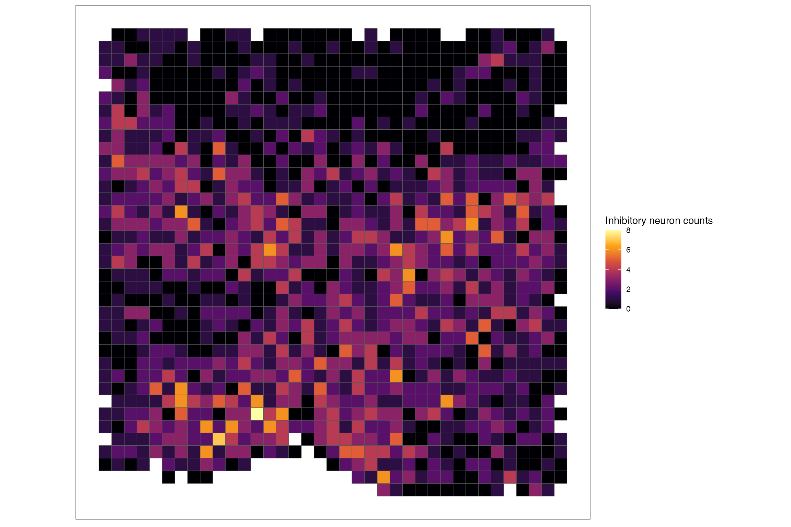
Rasterize cell-type
For categorical variables such as cell-type or cluster labels,
SEraster aggregates the number of cells for each label
within each pixel using sums by default (can be changed using the
fun argument).
Let’s try rasterizing the cell-type labels of the MERFISH mouse POA dataset.
rastCt <- SEraster::rasterizeCellType(merfish_mousePOA, col_name = "celltype", resolution = 50)
# check the dimension of the cell-types-by-cells matrix after rasterizing cell-type labels
dim(rastGexp)
#> [1] 155 1301
# plot total cell counts
SEraster::plotRaster(rastCt, name = "cell counts", option = "inferno")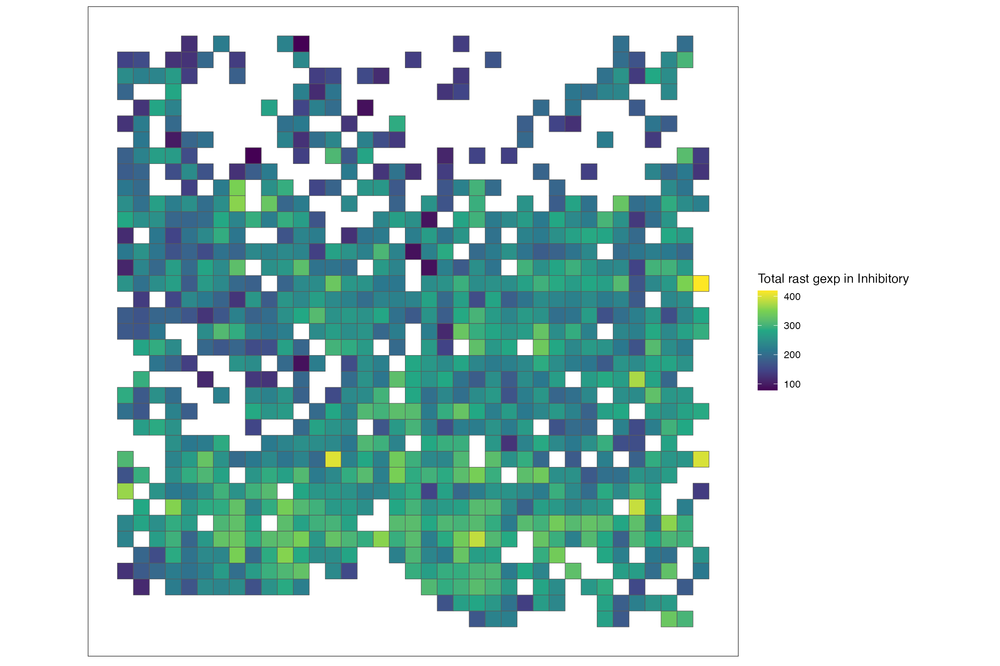
# plot specific cell-type
SEraster::plotRaster(rastCt, feature_name = "Inhibitory", name = "Inhibitory neuron counts", option = "inferno")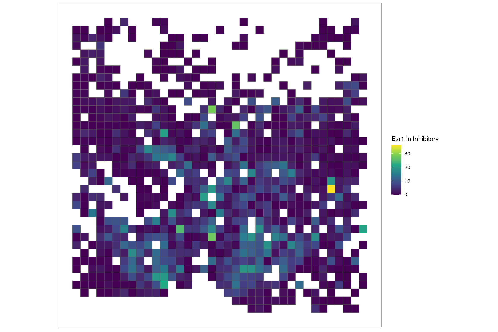
Setting rasterization resolution
Rasterization resolution can be controlled by the
resolution argument of the
rasterizeGeneExpression and rasterizeCellType
functions. Here, we refer to a particular resolution of rasterization by
the side length for square pixels and the distance between opposite
edges for hexagonal pixels such that finer resolution indicates smaller
pixel size and vice versa.
Let’s see how the rasterized MERFISH mouse POA dataset look with various resolutions using square pixels.
resolutions <- c(50, 100, 200)
for (resolution in resolutions) {
# rasterize at defined resolution
temp <- SEraster::rasterizeGeneExpression(merfish_mousePOA, assay_name="volnorm", resolution = resolution)
# plot a specific gene
plt <- SEraster::plotRaster(temp, feature_name = "Esr1", name = "Esr1", plotTitle = paste0("resolution: ", resolution))
show(plt)
} 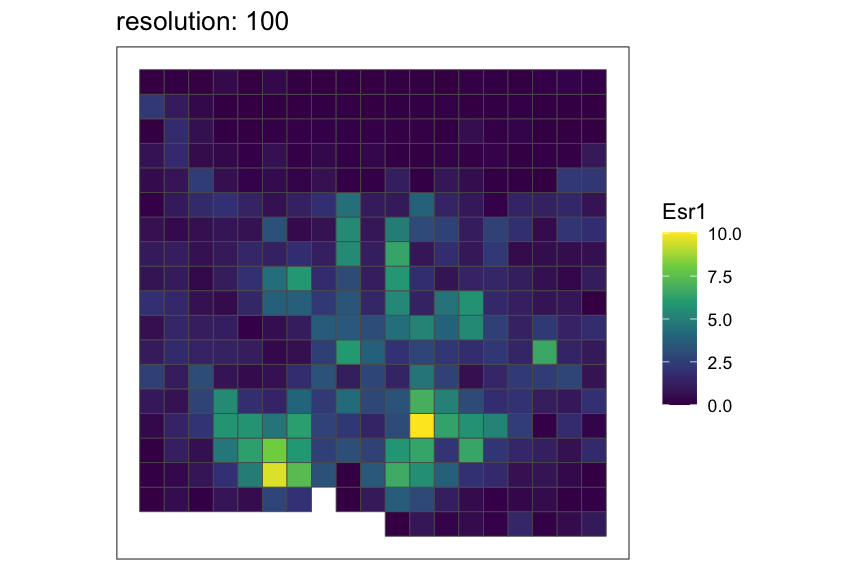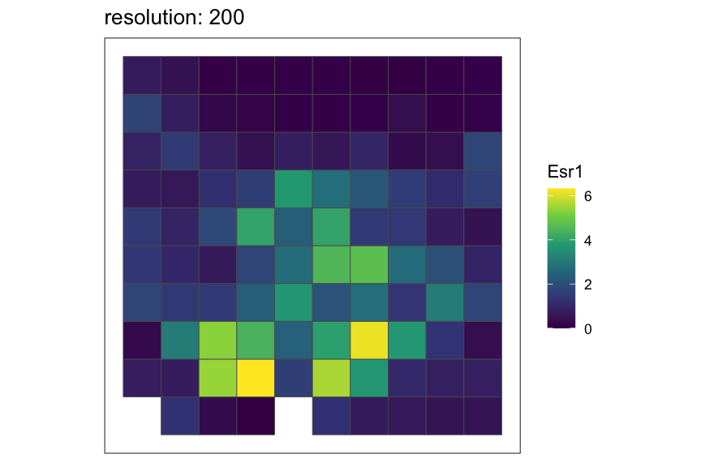
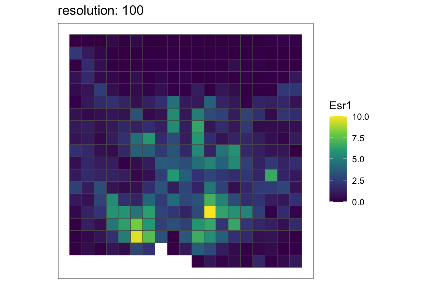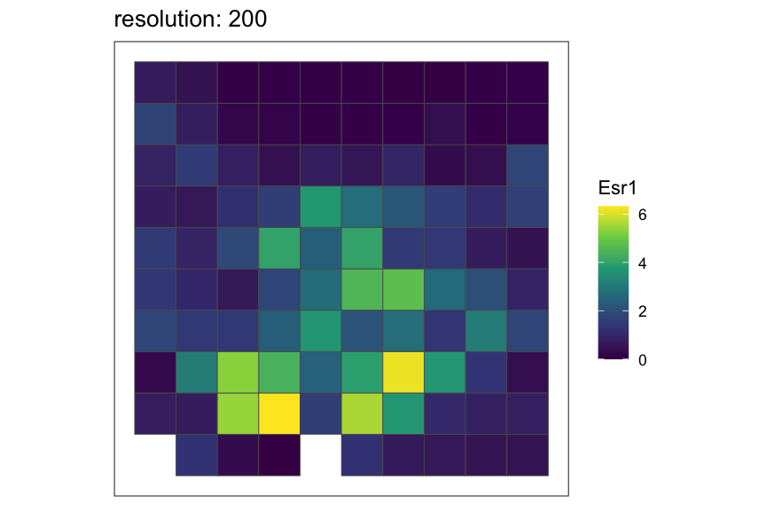
Now, let’s see the same resolutions using hexagonal pixels.
for (resolution in resolutions) {
# rasterize at defined resolution
temp <- SEraster::rasterizeGeneExpression(merfish_mousePOA, assay_name="volnorm", resolution = resolution, square = FALSE)
# plot a specific gene
plt <- SEraster::plotRaster(temp, feature_name = "Esr1", name = "Esr1", plotTitle = paste0("resolution: ", resolution))
show(plt)
}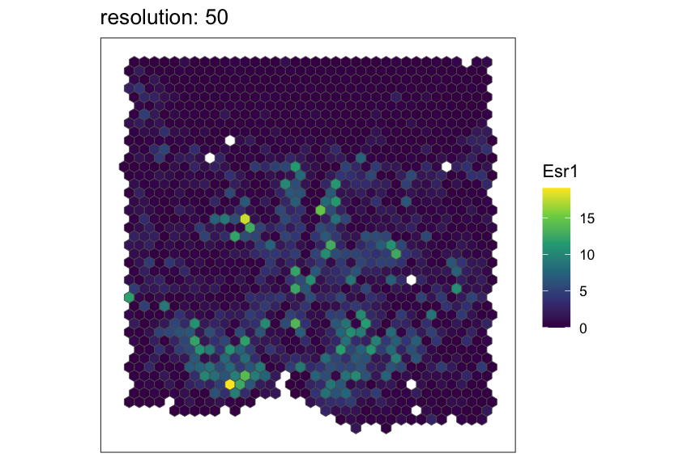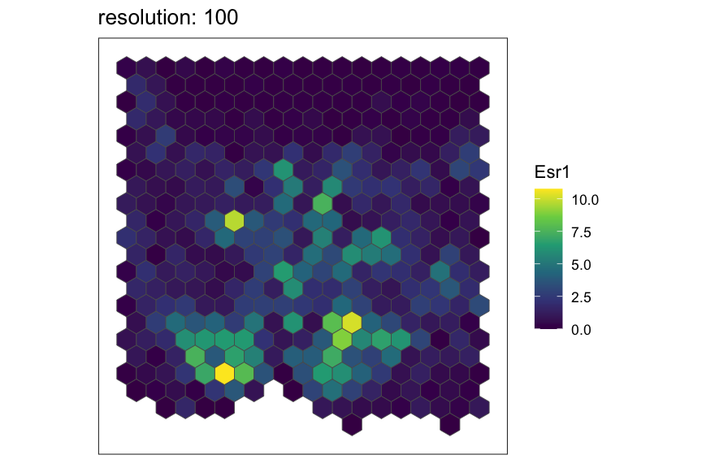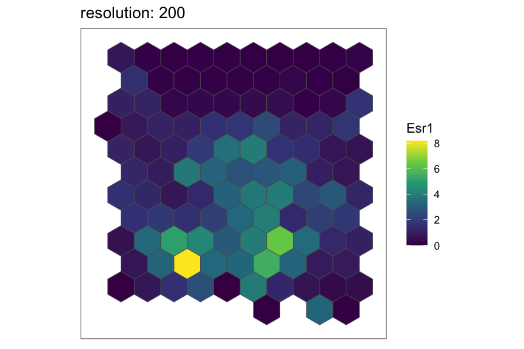
Creating and rasterizing permutations
Since rasterized values may be sensitive to edge effects such as the
specific boundaries of grids upon rasterization, SEraster
enables permutation by rotating the dataset at various angles before
rasterization.
For example, let’s create 3 permutations of the MERFISH mouse POA
dataset, which would output a list of 3
SpatialExperiment objects with x,y coordinates rotated at
0, 120, and 240 degrees around the midrange point.
In addition to a single SpatialExperiment object,
rasterizeGeneExpression and rasterizeCellType
functions can both take a list of
SpatialExperiment objects. This essentially allows users to
streamline the preprocessing of permutations with SEraster;
followed by a downstream analysis of choice. For instance, in our
manuscript, we have shown that permutations can be used to improve the
performance of SVG analysis.
# permutate
spe_list <- permutateByRotation(merfish_mousePOA, n_perm = 3)
# rasterize permutated datasets at once
out_list <- rasterizeGeneExpression(spe_list, assay_name = "volnorm", resolution = 50)
for (i in seq_along(out_list)) {
# extract rotated angle
angle <- gsub("rotated_", "", paste0("rotated ", names(out_list)[[i]], " degrees"))
# plot a specific gene
plt <- SEraster::plotRaster(out_list[[i]], feature_name = "Esr1", name = "Esr1", plotTitle = angle)
show(plt)
}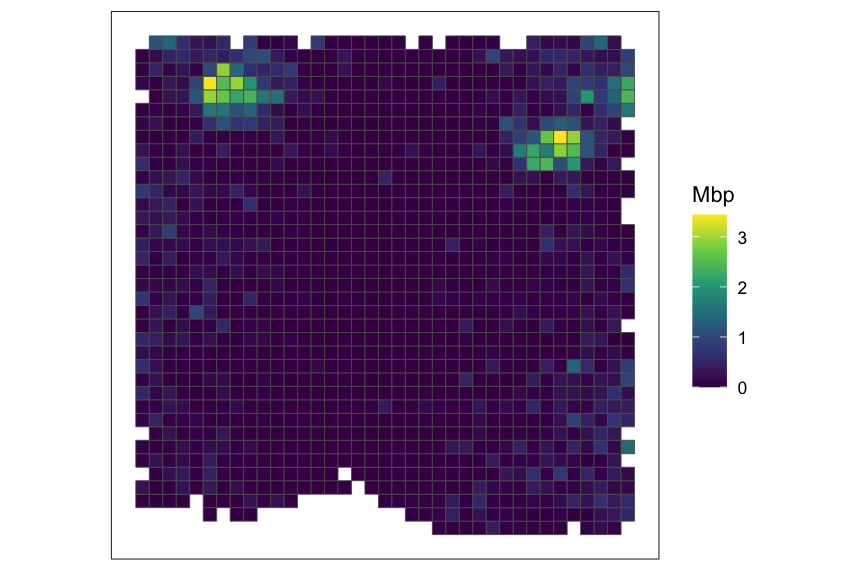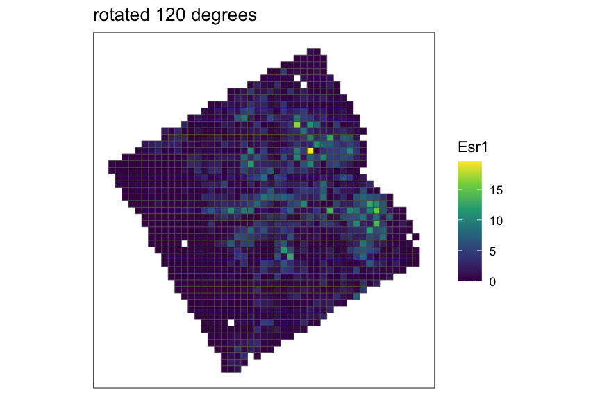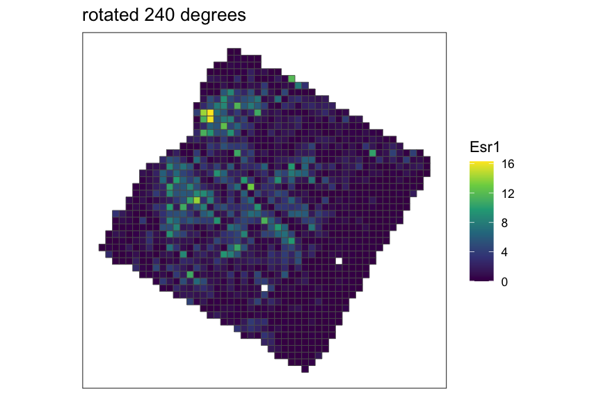
As you can see from the plots above, when SEraster
rasterizes a list of SpatialExperiment
objects, all SpatialExperiment objects in the inputted
list are rasterized with the same pixel coordinate
framework (same bounding box, resolution, centroid coordinates). This
feature may not be particularly useful for permutations; however, it can
potentially be applied to compare two or more datasets, such as
structurally aligned tissues as well as healthy vs. disease tissues.
Examples of downstream analyses after SEraster preprocessing
Spatial variable gene (SVG) analysis
Here, we use a previously developed tool called nnSVG.
Please refer to nnSVG for more
details about the package. We can directly input rasterized gene
expression SpatialExperiment object from
SEraster into nnSVG.
# number of significant SVGs based on the selected adjusted p-value threshold
table(rowData(rastGexp)$padj <= 0.05)
#>
#> FALSE TRUE
#> 17 138
# plot rasterized gene expression of top-ranked SVG
top_svg <- which(rowData(rastGexp)$rank == 1)
top_svg_name <- rownames(rowData(rastGexp))[top_svg]
SEraster::plotRaster(rastGexp, feature_name = top_svg_name, name = top_svg_name)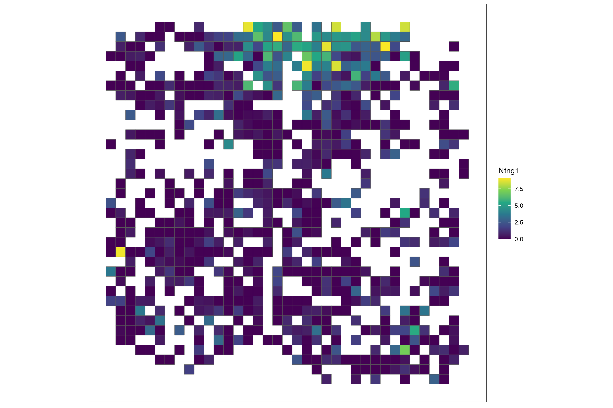
We can also perform cell-type specific SVG analysis by subsetting the
dataset prior to applying SEraster.
# subset data
ct_interest <- "Excitatory"
spe_sub <- merfish_mousePOA[,merfish_mousePOA$celltype == ct_interest]
# run SEraster
rastGexp_sub <- SEraster::rasterizeGeneExpression(spe_sub, assay_name="volnorm", resolution = 50)
# run nnSVG
set.seed(0)
rastGexp_sub <- nnSVG(rastGexp_sub, assay_name = "pixelval")
# number of significant SVGs
table(rowData(rastGexp_sub)$padj <= 0.05)
#>
#> FALSE TRUE
#> 45 110
# plot rasterized gene expression of top-ranked SVG
top_svg <- which(rowData(rastGexp_sub)$rank == 1)
top_svg_name <- rownames(rowData(rastGexp_sub))[top_svg]
SEraster::plotRaster(rastGexp_sub, feature_name = top_svg_name, name = top_svg_name)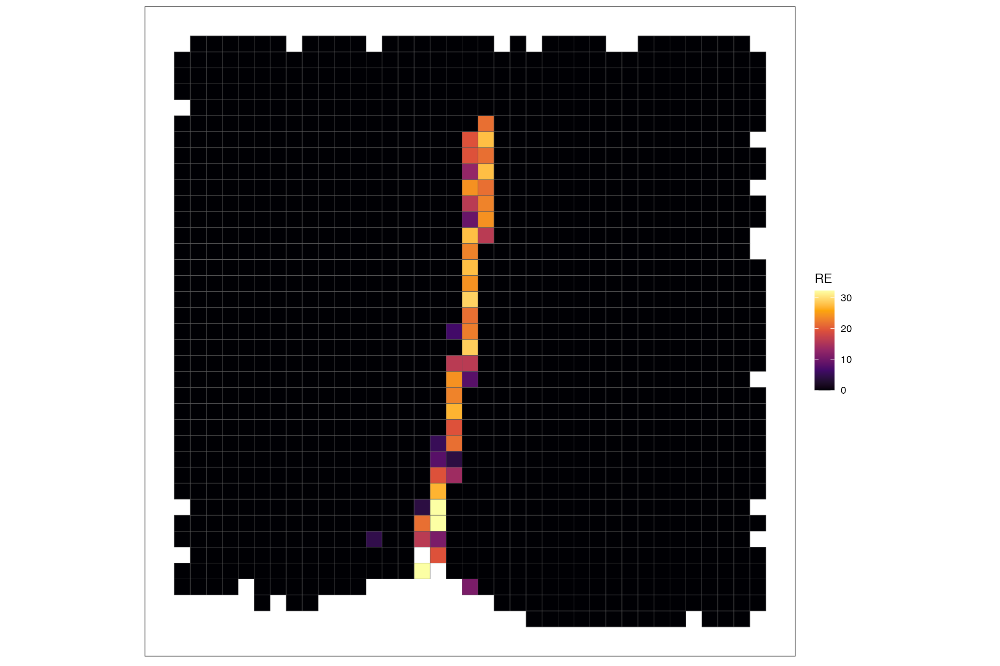
Cell-type co-enrichment analysis
Rasterized cell-type labels can be used to analyze pair-wise
cell-type co-enrichment To do so, we binarize the rasterized cell-type
labels using a relative enrichment metric and a previously developed
tool called CooccurrenceAffinity. Please refer to our paper
for more details about the methodology and CooccurrenceAffinity
for more details about the package.
# extract cell-type labels
ct_labels <- as.factor(colData(merfish_mousePOA)$celltype)
# compute relative enrichment (RE) metric
mat <- assay(rastCt, "pixelval")
mat_re <- do.call(rbind, lapply(rownames(rastCt), function(ct_label) {
mat[ct_label,] / (sum(mat[ct_label,]) / sum(mat) * colSums(mat))
}))
rownames(mat_re) <- rownames(mat)
# binarize
mat_bin <- ifelse(mat_re >= 1, 1, 0)
# add RE and binarized layers to SpatialExperiment object
assays(rastCt) <- list(pixelval = assay(rastCt, "pixelval"), re = mat_re, bin = mat_bin)
ct_interest <- "Ependymal"
# plot pixel value for a cell-type of interest
plotRaster(rastCt, assay_name = "pixelval", feature_name = ct_interest, name = "cell-type counts", option = "inferno")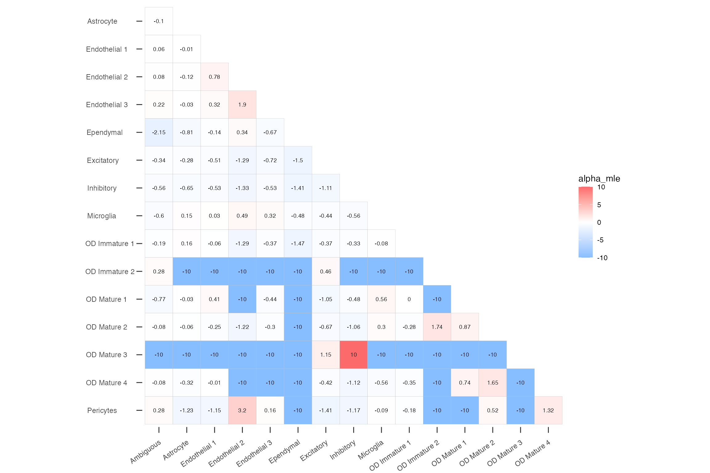
# plot RE value for a cell-type of interest
plotRaster(rastCt, assay_name = "re", feature_name = ct_interest, name = "RE", option = "inferno")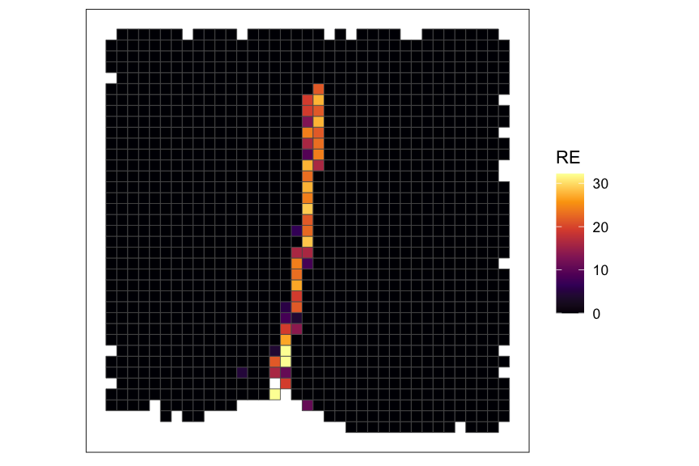
# plot binarized value for a cell-type of interest
plotRaster(rastCt, assay_name = "bin", feature_name = ct_interest, factor_levels = c(0,1), name = "binarized", option = "inferno")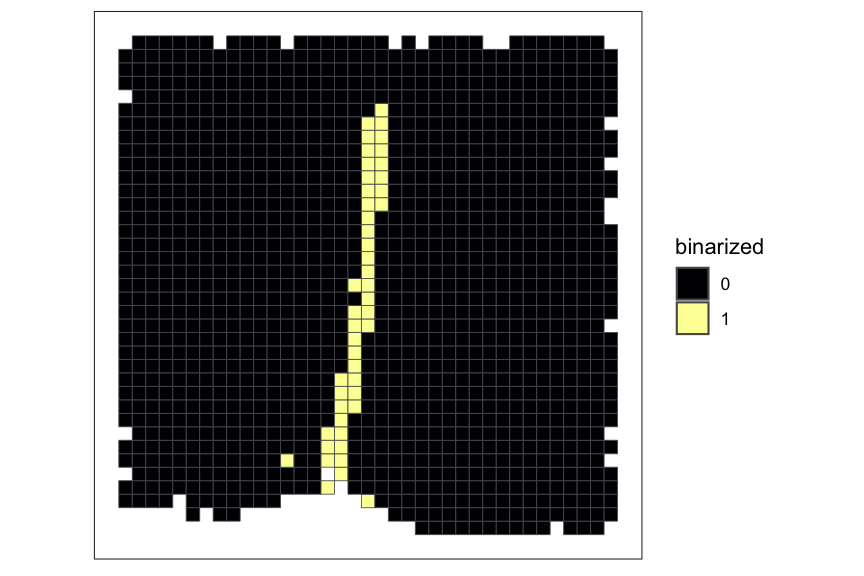
# run CooccurrenceAffinity
ct_coocc <- CooccurrenceAffinity::affinity(data = mat_bin, row.or.col = "row", squarematrix = c("all"))
#>
#> ------ as expected, the data ready for analysis has only 1 and 0... 1 = present, 0 = absent used for the interpretation ------
#> Warning in AlphInts(x, marg, lev = lev, scal = scal, pvalType = pvalType): MLE = -Infty is capped, along with lower confidence limits
#> Warning in AlphInts(x, marg, lev = lev, scal = scal, pvalType = pvalType): MLE = -Infty is capped, along with lower confidence limits
#> Warning in AlphInts(x, marg, lev = lev, scal = scal, pvalType = pvalType): MLE = -Infty is capped, along with lower confidence limits
#> Warning in AlphInts(x, marg, lev = lev, scal = scal, pvalType = pvalType): MLE = -Infty is capped, along with lower confidence limits
#> Warning in AlphInts(x, marg, lev = lev, scal = scal, pvalType = pvalType): MLE = -Infty is capped, along with lower confidence limits
#> Warning in AlphInts(x, marg, lev = lev, scal = scal, pvalType = pvalType): MLE = -Infty is capped, along with lower confidence limits
#> Warning in AcceptAffCI(x, marg, lev, Int2): NAs introduced by coercion
#> Warning in AcceptAffCI(x, marg, lev, Int2): NAs introduced by coercion
#> Warning in AlphInts(x, marg, lev = lev, scal = scal, pvalType = pvalType): MLE = -Infty is capped, along with lower confidence limits
#> Warning in AlphInts(x, marg, lev = lev, scal = scal, pvalType = pvalType): MLE = -Infty is capped, along with lower confidence limits
#> Warning in AlphInts(x, marg, lev = lev, scal = scal, pvalType = pvalType): MLE = -Infty is capped, along with lower confidence limits
#> Warning in AlphInts(x, marg, lev = lev, scal = scal, pvalType = pvalType): MLE = -Infty is capped, along with lower confidence limits
#> Warning in AlphInts(x, marg, lev = lev, scal = scal, pvalType = pvalType): MLE = -Infty is capped, along with lower confidence limits
#> Warning in AlphInts(x, marg, lev = lev, scal = scal, pvalType = pvalType): MLE = -Infty is capped, along with lower confidence limits
#> Warning in AlphInts(x, marg, lev = lev, scal = scal, pvalType = pvalType): MLE = -Infty is capped, along with lower confidence limits
#> Warning in AlphInts(x, marg, lev = lev, scal = scal, pvalType = pvalType): MLE = -Infty is capped, along with lower confidence limits
#> Warning in AlphInts(x, marg, lev = lev, scal = scal, pvalType = pvalType): MLE = -Infty is capped, along with lower confidence limits
#> Warning in AlphInts(x, marg, lev = lev, scal = scal, pvalType = pvalType): MLE = -Infty is capped, along with lower confidence limits
#> Warning in AlphInts(x, marg, lev = lev, scal = scal, pvalType = pvalType): MLE = -Infty is capped, along with lower confidence limits
#> Warning in AlphInts(x, marg, lev = lev, scal = scal, pvalType = pvalType): MLE = -Infty is capped, along with lower confidence limits
#> Warning in AlphInts(x, marg, lev = lev, scal = scal, pvalType = pvalType): MLE = -Infty is capped, along with lower confidence limits
#> Warning in AlphInts(x, marg, lev = lev, scal = scal, pvalType = pvalType): MLE = -Infty is capped, along with lower confidence limits
#> Warning in AlphInts(x, marg, lev = lev, scal = scal, pvalType = pvalType): MLE = -Infty is capped, along with lower confidence limits
#> Warning in AlphInts(x, marg, lev = lev, scal = scal, pvalType = pvalType): MLE = -Infty is capped, along with lower confidence limits
#> Warning in AlphInts(x, marg, lev = lev, scal = scal, pvalType = pvalType): MLE = -Infty is capped, along with lower confidence limits
#> Warning in AlphInts(x, marg, lev = lev, scal = scal, pvalType = pvalType): MLE = -Infty is capped, along with lower confidence limits
#> Warning in AlphInts(x, marg, lev = lev, scal = scal, pvalType = pvalType): MLE = -Infty is capped, along with lower confidence limits
#> Warning in AlphInts(x, marg, lev = lev, scal = scal, pvalType = pvalType): MLE = -Infty is capped, along with lower confidence limits
#> Warning in AlphInts(x, marg, lev = lev, scal = scal, pvalType = pvalType): MLE = -Infty is capped, along with lower confidence limits
#> Warning in AlphInts(x, marg, lev = lev, scal = scal, pvalType = pvalType): MLE = -Infty is capped, along with lower confidence limits
#> Warning in AlphInts(x, marg, lev = lev, scal = scal, pvalType = pvalType): MLE = -Infty is capped, along with lower confidence limits
#> Warning in AlphInts(x, marg, lev = lev, scal = scal, pvalType = pvalType): MLE = -Infty is capped, along with lower confidence limits
#> Warning in AlphInts(x, marg, lev = lev, scal = scal, pvalType = pvalType): MLE = -Infty is capped, along with lower confidence limits
#> Warning in AlphInts(x, marg, lev = lev, scal = scal, pvalType = pvalType): MLE = -Infty is capped, along with lower confidence limits
#> Warning in AlphInts(x, marg, lev = lev, scal = scal, pvalType = pvalType): MLE = -Infty is capped, along with lower confidence limits
#> Warning in AlphInts(x, marg, lev = lev, scal = scal, pvalType = pvalType): MLE = -Infty is capped, along with lower confidence limits
#> Warning in AlphInts(x, marg, lev = lev, scal = scal, pvalType = pvalType): MLE = -Infty is capped, along with lower confidence limits
#> Warning in AlphInts(x, marg, lev = lev, scal = scal, pvalType = pvalType): MLE = -Infty is capped, along with lower confidence limits
#> Warning in AlphInts(x, marg, lev = lev, scal = scal, pvalType = pvalType): MLE = -Infty is capped, along with lower confidence limits
#> Warning in AlphInts(x, marg, lev = lev, scal = scal, pvalType = pvalType): MLE = -Infty is capped, along with lower confidence limits
#> Warning in AlphInts(x, marg, lev = lev, scal = scal, pvalType = pvalType): MLE = Infty is capped, along with upper confidence limits
#> Warning in AlphInts(x, marg, lev = lev, scal = scal, pvalType = pvalType): MLE = Infty is capped, along with upper confidence limits
#> Warning in AlphInts(x, marg, lev = lev, scal = scal, pvalType = pvalType): MLE = -Infty is capped, along with lower confidence limits
#> Warning in AlphInts(x, marg, lev = lev, scal = scal, pvalType = pvalType): MLE = -Infty is capped, along with lower confidence limits
#> Warning in AlphInts(x, marg, lev = lev, scal = scal, pvalType = pvalType): MLE = -Infty is capped, along with lower confidence limits
#> Warning in AlphInts(x, marg, lev = lev, scal = scal, pvalType = pvalType): MLE = -Infty is capped, along with lower confidence limits
#> Warning in AlphInts(x, marg, lev = lev, scal = scal, pvalType = pvalType): MLE = -Infty is capped, along with lower confidence limits
#> Warning in AlphInts(x, marg, lev = lev, scal = scal, pvalType = pvalType): MLE = -Infty is capped, along with lower confidence limits
#> Warning in AlphInts(x, marg, lev = lev, scal = scal, pvalType = pvalType): MLE = -Infty is capped, along with lower confidence limits
#> Warning in AlphInts(x, marg, lev = lev, scal = scal, pvalType = pvalType): MLE = -Infty is capped, along with lower confidence limits
#> Warning in AlphInts(x, marg, lev = lev, scal = scal, pvalType = pvalType): MLE = -Infty is capped, along with lower confidence limits
#> Warning in AlphInts(x, marg, lev = lev, scal = scal, pvalType = pvalType): MLE = -Infty is capped, along with lower confidence limits
#> Warning in AlphInts(x, marg, lev = lev, scal = scal, pvalType = pvalType): MLE = -Infty is capped, along with lower confidence limits
#> Warning in AlphInts(x, marg, lev = lev, scal = scal, pvalType = pvalType): MLE = -Infty is capped, along with lower confidence limits
#> Warning in AlphInts(x, marg, lev = lev, scal = scal, pvalType = pvalType): MLE = -Infty is capped, along with lower confidence limits
#> Warning in AlphInts(x, marg, lev = lev, scal = scal, pvalType = pvalType): MLE = -Infty is capped, along with lower confidence limits
#> Warning in AlphInts(x, marg, lev = lev, scal = scal, pvalType = pvalType): MLE = -Infty is capped, along with lower confidence limits
#> Warning in AlphInts(x, marg, lev = lev, scal = scal, pvalType = pvalType): MLE = -Infty is capped, along with lower confidence limits
#> Warning in AlphInts(x, marg, lev = lev, scal = scal, pvalType = pvalType): MLE = -Infty is capped, along with lower confidence limits
#> Warning in AlphInts(x, marg, lev = lev, scal = scal, pvalType = pvalType): MLE = -Infty is capped, along with lower confidence limits
#> Warning in AlphInts(x, marg, lev = lev, scal = scal, pvalType = pvalType): MLE = -Infty is capped, along with lower confidence limits
#> Warning in AlphInts(x, marg, lev = lev, scal = scal, pvalType = pvalType): MLE = -Infty is capped, along with lower confidence limits
#> Warning in AlphInts(x, marg, lev = lev, scal = scal, pvalType = pvalType): MLE = -Infty is capped, along with lower confidence limits
#> Warning in AlphInts(x, marg, lev = lev, scal = scal, pvalType = pvalType): MLE = -Infty is capped, along with lower confidence limits
#> Warning in AlphInts(x, marg, lev = lev, scal = scal, pvalType = pvalType): MLE = -Infty is capped, along with lower confidence limits
#> Warning in AlphInts(x, marg, lev = lev, scal = scal, pvalType = pvalType): MLE = -Infty is capped, along with lower confidence limits
#> Warning in AlphInts(x, marg, lev = lev, scal = scal, pvalType = pvalType): MLE = -Infty is capped, along with lower confidence limits
#> Warning in AlphInts(x, marg, lev = lev, scal = scal, pvalType = pvalType): MLE = -Infty is capped, along with lower confidence limits
#> ~~~~~~~~~~ printing head of all elements of the output list ~~~~~~~~~~
#> $all
#> entity_1 entity_2 entity_1_count_mA entity_2_count_mB obs_cooccur_X
#> 1 Ambiguous Astrocyte 561 557 232
#> 2 Ambiguous Endothelial 1 561 308 136
#> 3 Ambiguous Endothelial 2 561 20 9
#> 4 Ambiguous Endothelial 3 561 102 49
#> 5 Ambiguous Ependymal 561 47 4
#> 6 Ambiguous Excitatory 561 504 192
#> total_N p_value exp_cooccur alpha_mle alpha_medianInt conf_level
#> 1 1301 0.3657 240.182 -0.105 [-0.111, -0.098] 0.95
#> 2 1301 0.693 132.812 0.055 [0.047, 0.064] 0.95
#> 3 1301 1 8.624 0.077 [-0.021, 0.181] 0.95
#> 4 1301 0.2998 43.983 0.215 [0.194, 0.237] 0.95
#> 5 1301 2.1435e-07 20.267 -2.150 [-2.252, -1.986] 0.95
#> 6 1301 0.0041 217.328 -0.337 [-0.343, -0.33] 0.95
#> ci_blaker ci_cp ci_midQ ci_midP jaccard
#> 1 [-0.331, 0.119] [-0.333, 0.123] [-0.327, 0.117] [-0.327, 0.117] 0.262
#> 2 [-0.208, 0.313] [-0.212, 0.321] [-0.203, 0.312] [-0.203, 0.313] 0.186
#> 3 [-0.894, 1.04] [-0.934, 1.061] [-0.823, 0.959] [-0.846, 0.98] 0.016
#> 4 [-0.201, 0.625] [-0.212, 0.641] [-0.19, 0.62] [-0.192, 0.622] 0.080
#> 5 [-3.27, -1.164] [-3.5, -1.128] [-3.291, -1.223] [-3.341, -1.2] 0.007
#> 6 [-0.569, -0.104] [-0.571, -0.104] [-0.565, -0.11] [-0.565, -0.11] 0.220
#> sorensen simpson errornote
#> 1 0.415 0.417 NA
#> 2 0.313 0.442 NA
#> 3 0.031 0.450 NA
#> 4 0.148 0.480 NA
#> 5 0.013 0.085 NA
#> 6 0.361 0.381 NA
#>
#> $occur_mat
#> Ambiguous Astrocyte Endothelial 1 Endothelial 2 Endothelial 3 Ependymal
#> pixel23 1 0 0 0 0 0
#> pixel24 0 0 1 0 0 0
#> pixel25 0 1 0 0 0 0
#> pixel26 0 0 0 0 0 0
#> pixel27 1 0 1 0 0 0
#> pixel28 0 1 0 0 0 0
#> Excitatory Inhibitory Microglia OD Immature 1 OD Immature 2 OD Mature 1
#> pixel23 0 1 0 0 0 0
#> pixel24 0 1 0 0 0 0
#> pixel25 0 0 0 1 0 0
#> pixel26 1 0 0 0 0 0
#> pixel27 0 0 0 0 0 0
#> pixel28 1 0 0 0 0 0
#> OD Mature 2 OD Mature 3 OD Mature 4 Pericytes
#> pixel23 0 0 0 0
#> pixel24 0 0 0 0
#> pixel25 0 0 0 0
#> pixel26 0 0 0 0
#> pixel27 0 0 0 0
#> pixel28 0 0 0 0
#>
#> $alpha_mle
#> Ambiguous Astrocyte Endothelial 1 Endothelial 2 Endothelial 3
#> Ambiguous NA NA NA NA NA
#> Astrocyte -0.105 NA NA NA NA
#> Endothelial 1 0.055 -0.015 NA NA NA
#> Endothelial 2 0.077 -0.118 0.779 NA NA
#> Endothelial 3 0.215 -0.029 0.322 1.902 NA
#> Ependymal -2.150 -0.807 -0.143 0.345 -0.667
#> Ependymal Excitatory Inhibitory Microglia OD Immature 1
#> Ambiguous NA NA NA NA NA
#> Astrocyte NA NA NA NA NA
#> Endothelial 1 NA NA NA NA NA
#> Endothelial 2 NA NA NA NA NA
#> Endothelial 3 NA NA NA NA NA
#> Ependymal NA NA NA NA NA
#> OD Immature 2 OD Mature 1 OD Mature 2 OD Mature 3 OD Mature 4
#> Ambiguous NA NA NA NA NA
#> Astrocyte NA NA NA NA NA
#> Endothelial 1 NA NA NA NA NA
#> Endothelial 2 NA NA NA NA NA
#> Endothelial 3 NA NA NA NA NA
#> Ependymal NA NA NA NA NA
#> Pericytes
#> Ambiguous NA
#> Astrocyte NA
#> Endothelial 1 NA
#> Endothelial 2 NA
#> Endothelial 3 NA
#> Ependymal NA
#>
#> $alpha_mle_sig
#> Ambiguous Astrocyte Endothelial 1 Endothelial 2 Endothelial 3
#> Ambiguous NA NA NA NA NA
#> Astrocyte NA NA NA NA NA
#> Endothelial 1 NA NA NA NA NA
#> Endothelial 2 NA NA NA NA NA
#> Endothelial 3 NA NA NA 1.902 NA
#> Ependymal -2.15 -0.807 NA NA NA
#> Ependymal Excitatory Inhibitory Microglia OD Immature 1
#> Ambiguous NA NA NA NA NA
#> Astrocyte NA NA NA NA NA
#> Endothelial 1 NA NA NA NA NA
#> Endothelial 2 NA NA NA NA NA
#> Endothelial 3 NA NA NA NA NA
#> Ependymal NA NA NA NA NA
#> OD Immature 2 OD Mature 1 OD Mature 2 OD Mature 3 OD Mature 4
#> Ambiguous NA NA NA NA NA
#> Astrocyte NA NA NA NA NA
#> Endothelial 1 NA NA NA NA NA
#> Endothelial 2 NA NA NA NA NA
#> Endothelial 3 NA NA NA NA NA
#> Ependymal NA NA NA NA NA
#> Pericytes
#> Ambiguous NA
#> Astrocyte NA
#> Endothelial 1 NA
#> Endothelial 2 NA
#> Endothelial 3 NA
#> Ependymal NA
#>
#> $p_value
#> Ambiguous Astrocyte Endothelial 1 Endothelial 2 Endothelial 3
#> Ambiguous <NA> <NA> <NA> <NA> NA
#> Astrocyte 0.3657 <NA> <NA> <NA> NA
#> Endothelial 1 0.693 0.9475 <NA> <NA> NA
#> Endothelial 2 1 0.825 0.1079 <NA> NA
#> Endothelial 3 0.2998 0.9173 0.1813 5e-04 NA
#> Ependymal 2.1435e-07 0.0159 0.7323 1 0.4274
#> Ependymal Excitatory Inhibitory Microglia OD Immature 1
#> Ambiguous <NA> <NA> <NA> NA NA
#> Astrocyte <NA> <NA> <NA> NA NA
#> Endothelial 1 <NA> <NA> <NA> NA NA
#> Endothelial 2 <NA> <NA> <NA> NA NA
#> Endothelial 3 <NA> <NA> <NA> NA NA
#> Ependymal <NA> <NA> <NA> NA NA
#> OD Immature 2 OD Mature 1 OD Mature 2 OD Mature 3 OD Mature 4
#> Ambiguous NA NA NA NA NA
#> Astrocyte NA NA NA NA NA
#> Endothelial 1 NA NA NA NA NA
#> Endothelial 2 NA NA NA NA NA
#> Endothelial 3 NA NA NA NA NA
#> Ependymal NA NA NA NA NA
#> Pericytes
#> Ambiguous NA
#> Astrocyte NA
#> Endothelial 1 NA
#> Endothelial 2 NA
#> Endothelial 3 NA
#> Ependymal NA
#>
#> $cooccur.null
#> Ambiguous Astrocyte Endothelial 1 Endothelial 2 Endothelial 3
#> Ambiguous NA NA NA NA NA
#> Astrocyte 240.182 NA NA NA NA
#> Endothelial 1 132.812 131.865 NA NA NA
#> Endothelial 2 8.624 8.563 4.735 NA NA
#> Endothelial 3 43.983 43.669 24.148 1.568 NA
#> Ependymal 20.267 20.122 11.127 0.723 3.685
#> Ependymal Excitatory Inhibitory Microglia OD Immature 1
#> Ambiguous NA NA NA NA NA
#> Astrocyte NA NA NA NA NA
#> Endothelial 1 NA NA NA NA NA
#> Endothelial 2 NA NA NA NA NA
#> Endothelial 3 NA NA NA NA NA
#> Ependymal NA NA NA NA NA
#> OD Immature 2 OD Mature 1 OD Mature 2 OD Mature 3 OD Mature 4
#> Ambiguous NA NA NA NA NA
#> Astrocyte NA NA NA NA NA
#> Endothelial 1 NA NA NA NA NA
#> Endothelial 2 NA NA NA NA NA
#> Endothelial 3 NA NA NA NA NA
#> Ependymal NA NA NA NA NA
#> Pericytes
#> Ambiguous NA
#> Astrocyte NA
#> Endothelial 1 NA
#> Endothelial 2 NA
#> Endothelial 3 NA
#> Ependymal NA
#>
#> $cooccur.obs
#> Ambiguous Astrocyte Endothelial 1 Endothelial 2 Endothelial 3
#> Ambiguous NA NA NA NA NA
#> Astrocyte 232 NA NA NA NA
#> Endothelial 1 136 131 NA NA NA
#> Endothelial 2 9 8 8 NA NA
#> Endothelial 3 49 43 30 7 NA
#> Ependymal 4 12 10 1 2
#> Ependymal Excitatory Inhibitory Microglia OD Immature 1
#> Ambiguous NA NA NA NA NA
#> Astrocyte NA NA NA NA NA
#> Endothelial 1 NA NA NA NA NA
#> Endothelial 2 NA NA NA NA NA
#> Endothelial 3 NA NA NA NA NA
#> Ependymal NA NA NA NA NA
#> OD Immature 2 OD Mature 1 OD Mature 2 OD Mature 3 OD Mature 4
#> Ambiguous NA NA NA NA NA
#> Astrocyte NA NA NA NA NA
#> Endothelial 1 NA NA NA NA NA
#> Endothelial 2 NA NA NA NA NA
#> Endothelial 3 NA NA NA NA NA
#> Ependymal NA NA NA NA NA
#> Pericytes
#> Ambiguous NA
#> Astrocyte NA
#> Endothelial 1 NA
#> Endothelial 2 NA
#> Endothelial 3 NA
#> Ependymal NA
#>
#> $jaccard
#> Ambiguous Astrocyte Endothelial 1 Endothelial 2 Endothelial 3
#> Ambiguous NA NA NA NA NA
#> Astrocyte 0.262 NA NA NA NA
#> Endothelial 1 0.186 0.178 NA NA NA
#> Endothelial 2 0.016 0.014 0.025 NA NA
#> Endothelial 3 0.080 0.070 0.079 0.061 NA
#> Ependymal 0.007 0.020 0.029 0.015 0.014
#> Ependymal Excitatory Inhibitory Microglia OD Immature 1
#> Ambiguous NA NA NA NA NA
#> Astrocyte NA NA NA NA NA
#> Endothelial 1 NA NA NA NA NA
#> Endothelial 2 NA NA NA NA NA
#> Endothelial 3 NA NA NA NA NA
#> Ependymal NA NA NA NA NA
#> OD Immature 2 OD Mature 1 OD Mature 2 OD Mature 3 OD Mature 4
#> Ambiguous NA NA NA NA NA
#> Astrocyte NA NA NA NA NA
#> Endothelial 1 NA NA NA NA NA
#> Endothelial 2 NA NA NA NA NA
#> Endothelial 3 NA NA NA NA NA
#> Ependymal NA NA NA NA NA
#> Pericytes
#> Ambiguous NA
#> Astrocyte NA
#> Endothelial 1 NA
#> Endothelial 2 NA
#> Endothelial 3 NA
#> Ependymal NA
#>
#> $jaccard_sig
#> Ambiguous Astrocyte Endothelial 1 Endothelial 2 Endothelial 3
#> Ambiguous NA NA NA NA NA
#> Astrocyte NA NA NA NA NA
#> Endothelial 1 NA NA NA NA NA
#> Endothelial 2 NA NA NA NA NA
#> Endothelial 3 NA NA NA 0.061 NA
#> Ependymal 0.007 0.02 NA NA NA
#> Ependymal Excitatory Inhibitory Microglia OD Immature 1
#> Ambiguous NA NA NA NA NA
#> Astrocyte NA NA NA NA NA
#> Endothelial 1 NA NA NA NA NA
#> Endothelial 2 NA NA NA NA NA
#> Endothelial 3 NA NA NA NA NA
#> Ependymal NA NA NA NA NA
#> OD Immature 2 OD Mature 1 OD Mature 2 OD Mature 3 OD Mature 4
#> Ambiguous NA NA NA NA NA
#> Astrocyte NA NA NA NA NA
#> Endothelial 1 NA NA NA NA NA
#> Endothelial 2 NA NA NA NA NA
#> Endothelial 3 NA NA NA NA NA
#> Ependymal NA NA NA NA NA
#> Pericytes
#> Ambiguous NA
#> Astrocyte NA
#> Endothelial 1 NA
#> Endothelial 2 NA
#> Endothelial 3 NA
#> Ependymal NA
#>
#> $sorensen
#> Ambiguous Astrocyte Endothelial 1 Endothelial 2 Endothelial 3
#> Ambiguous NA NA NA NA NA
#> Astrocyte 0.415 NA NA NA NA
#> Endothelial 1 0.313 0.303 NA NA NA
#> Endothelial 2 0.031 0.028 0.049 NA NA
#> Endothelial 3 0.148 0.131 0.146 0.115 NA
#> Ependymal 0.013 0.040 0.056 0.030 0.027
#> Ependymal Excitatory Inhibitory Microglia OD Immature 1
#> Ambiguous NA NA NA NA NA
#> Astrocyte NA NA NA NA NA
#> Endothelial 1 NA NA NA NA NA
#> Endothelial 2 NA NA NA NA NA
#> Endothelial 3 NA NA NA NA NA
#> Ependymal NA NA NA NA NA
#> OD Immature 2 OD Mature 1 OD Mature 2 OD Mature 3 OD Mature 4
#> Ambiguous NA NA NA NA NA
#> Astrocyte NA NA NA NA NA
#> Endothelial 1 NA NA NA NA NA
#> Endothelial 2 NA NA NA NA NA
#> Endothelial 3 NA NA NA NA NA
#> Ependymal NA NA NA NA NA
#> Pericytes
#> Ambiguous NA
#> Astrocyte NA
#> Endothelial 1 NA
#> Endothelial 2 NA
#> Endothelial 3 NA
#> Ependymal NA
#>
#> $sorensen_sig
#> Ambiguous Astrocyte Endothelial 1 Endothelial 2 Endothelial 3
#> Ambiguous NA NA NA NA NA
#> Astrocyte NA NA NA NA NA
#> Endothelial 1 NA NA NA NA NA
#> Endothelial 2 NA NA NA NA NA
#> Endothelial 3 NA NA NA 0.115 NA
#> Ependymal 0.013 0.04 NA NA NA
#> Ependymal Excitatory Inhibitory Microglia OD Immature 1
#> Ambiguous NA NA NA NA NA
#> Astrocyte NA NA NA NA NA
#> Endothelial 1 NA NA NA NA NA
#> Endothelial 2 NA NA NA NA NA
#> Endothelial 3 NA NA NA NA NA
#> Ependymal NA NA NA NA NA
#> OD Immature 2 OD Mature 1 OD Mature 2 OD Mature 3 OD Mature 4
#> Ambiguous NA NA NA NA NA
#> Astrocyte NA NA NA NA NA
#> Endothelial 1 NA NA NA NA NA
#> Endothelial 2 NA NA NA NA NA
#> Endothelial 3 NA NA NA NA NA
#> Ependymal NA NA NA NA NA
#> Pericytes
#> Ambiguous NA
#> Astrocyte NA
#> Endothelial 1 NA
#> Endothelial 2 NA
#> Endothelial 3 NA
#> Ependymal NA
#>
#> $simpson
#> Ambiguous Astrocyte Endothelial 1 Endothelial 2 Endothelial 3
#> Ambiguous NA NA NA NA NA
#> Astrocyte 0.417 NA NA NA NA
#> Endothelial 1 0.442 0.425 NA NA NA
#> Endothelial 2 0.450 0.400 0.400 NA NA
#> Endothelial 3 0.480 0.422 0.294 0.35 NA
#> Ependymal 0.085 0.255 0.213 0.05 0.043
#> Ependymal Excitatory Inhibitory Microglia OD Immature 1
#> Ambiguous NA NA NA NA NA
#> Astrocyte NA NA NA NA NA
#> Endothelial 1 NA NA NA NA NA
#> Endothelial 2 NA NA NA NA NA
#> Endothelial 3 NA NA NA NA NA
#> Ependymal NA NA NA NA NA
#> OD Immature 2 OD Mature 1 OD Mature 2 OD Mature 3 OD Mature 4
#> Ambiguous NA NA NA NA NA
#> Astrocyte NA NA NA NA NA
#> Endothelial 1 NA NA NA NA NA
#> Endothelial 2 NA NA NA NA NA
#> Endothelial 3 NA NA NA NA NA
#> Ependymal NA NA NA NA NA
#> Pericytes
#> Ambiguous NA
#> Astrocyte NA
#> Endothelial 1 NA
#> Endothelial 2 NA
#> Endothelial 3 NA
#> Ependymal NA
#>
#> $simpson_sig
#> Ambiguous Astrocyte Endothelial 1 Endothelial 2 Endothelial 3
#> Ambiguous NA NA NA NA NA
#> Astrocyte NA NA NA NA NA
#> Endothelial 1 NA NA NA NA NA
#> Endothelial 2 NA NA NA NA NA
#> Endothelial 3 NA NA NA 0.35 NA
#> Ependymal 0.085 0.255 NA NA NA
#> Ependymal Excitatory Inhibitory Microglia OD Immature 1
#> Ambiguous NA NA NA NA NA
#> Astrocyte NA NA NA NA NA
#> Endothelial 1 NA NA NA NA NA
#> Endothelial 2 NA NA NA NA NA
#> Endothelial 3 NA NA NA NA NA
#> Ependymal NA NA NA NA NA
#> OD Immature 2 OD Mature 1 OD Mature 2 OD Mature 3 OD Mature 4
#> Ambiguous NA NA NA NA NA
#> Astrocyte NA NA NA NA NA
#> Endothelial 1 NA NA NA NA NA
#> Endothelial 2 NA NA NA NA NA
#> Endothelial 3 NA NA NA NA NA
#> Ependymal NA NA NA NA NA
#> Pericytes
#> Ambiguous NA
#> Astrocyte NA
#> Endothelial 1 NA
#> Endothelial 2 NA
#> Endothelial 3 NA
#> Ependymal NA
#> ~~~~~~~~~~ COMPLETED: printing head of all elements of the output list ~~~~~~~~~~
# plot maximum likelihood estimates of affinity metric (alpha MLE)
CooccurrenceAffinity::plotgg(data = ct_coocc, variable = "alpha_mle", legendlimit = "datarange")
#> you can hide the printed values with show.value=F
#> use the argument value.digit to change number of digits and text.size to adjust the text size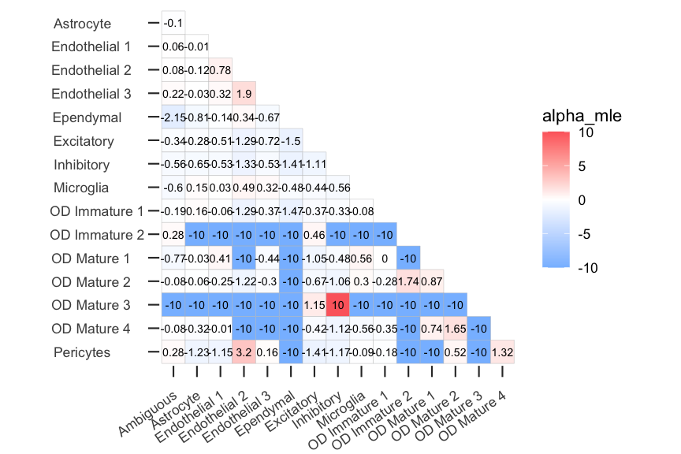
Session Info
sessionInfo()
#> R version 4.4.1 (2024-06-14)
#> Platform: aarch64-apple-darwin20
#> Running under: macOS Sonoma 14.5
#>
#> Matrix products: default
#> BLAS: /Library/Frameworks/R.framework/Versions/4.4-arm64/Resources/lib/libRblas.0.dylib
#> LAPACK: /Library/Frameworks/R.framework/Versions/4.4-arm64/Resources/lib/libRlapack.dylib; LAPACK version 3.12.0
#>
#> locale:
#> [1] en_US.UTF-8/en_US.UTF-8/en_US.UTF-8/C/en_US.UTF-8/en_US.UTF-8
#>
#> time zone: America/New_York
#> tzcode source: internal
#>
#> attached base packages:
#> [1] stats4 stats graphics grDevices utils datasets methods
#> [8] base
#>
#> other attached packages:
#> [1] ggplot2_3.5.1 CooccurrenceAffinity_1.0
#> [3] BiasedUrn_2.0.12 nnSVG_1.8.0
#> [5] SpatialExperiment_1.12.0 SingleCellExperiment_1.24.0
#> [7] SummarizedExperiment_1.32.0 Biobase_2.64.0
#> [9] GenomicRanges_1.54.1 GenomeInfoDb_1.40.1
#> [11] IRanges_2.38.1 S4Vectors_0.42.1
#> [13] BiocGenerics_0.50.0 MatrixGenerics_1.14.0
#> [15] matrixStats_1.4.0 SEraster_0.99.1
#>
#> loaded via a namespace (and not attached):
#> [1] tidyselect_1.2.1 viridisLite_0.4.2 farver_2.1.2
#> [4] dplyr_1.1.4 BRISC_1.0.5 fastmap_1.2.0
#> [7] reshape_0.8.9 RANN_2.6.1 digest_0.6.37
#> [10] lifecycle_1.0.4 sf_1.0-16 magrittr_2.0.3
#> [13] compiler_4.4.1 rlang_1.1.4 sass_0.4.9
#> [16] tools_4.4.1 utf8_1.2.4 yaml_2.3.10
#> [19] knitr_1.48 labeling_0.4.3 S4Arrays_1.2.1
#> [22] htmlwidgets_1.6.4 classInt_0.4-10 DelayedArray_0.28.0
#> [25] plyr_1.8.9 rdist_0.0.5 abind_1.4-5
#> [28] BiocParallel_1.38.0 KernSmooth_2.23-24 purrr_1.0.2
#> [31] withr_3.0.1 desc_1.4.3 grid_4.4.1
#> [34] fansi_1.0.6 e1071_1.7-14 colorspace_2.1-1
#> [37] scales_1.3.0 cli_3.6.3 rmarkdown_2.28
#> [40] crayon_1.5.3 ragg_1.3.3 generics_0.1.3
#> [43] rstudioapi_0.16.0 httr_1.4.7 rearrr_0.3.4
#> [46] rjson_0.2.22 DBI_1.2.3 pbapply_1.7-2
#> [49] cachem_1.1.0 proxy_0.4-27 zlibbioc_1.50.0
#> [52] parallel_4.4.1 XVector_0.44.0 vctrs_0.6.5
#> [55] Matrix_1.7-0 jsonlite_1.8.8 systemfonts_1.1.0
#> [58] magick_2.8.4 jquerylib_0.1.4 units_0.8-5
#> [61] glue_1.7.0 pkgdown_2.1.1 codetools_0.2-20
#> [64] cowplot_1.1.3 gtable_0.3.5 UCSC.utils_1.0.0
#> [67] munsell_0.5.1 tibble_3.2.1 pillar_1.9.0
#> [70] htmltools_0.5.8.1 GenomeInfoDbData_1.2.12 R6_2.5.1
#> [73] textshaping_0.4.0 evaluate_0.24.0 lattice_0.22-6
#> [76] highr_0.11 backports_1.5.0 bslib_0.8.0
#> [79] class_7.3-22 Rcpp_1.0.13 checkmate_2.3.2
#> [82] SparseArray_1.2.4 xfun_0.47 fs_1.6.4
#> [85] pkgconfig_2.0.3